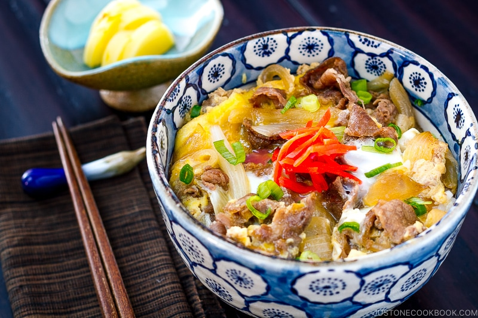

Gyudon Recipe by JustOneCookBook

Gyudon (Japanese Beef Rice Bowl Recipe)
Thinly sliced beef with onions and eggs served over steam rice is
one of my favorite simple japanese dish to make
Ingredients
- Thinly sliced beef
- Onion
- Egg
- Mirin
- Soy sauce
- Sugar
- Sake
Steps
- Stir-fry onions with a tablespoon of oil (not listed in the recipe) until tender.
- Add beef and sugar (using the same amount as specified in the recipe) and quickly stir to combine.
- Add sake, mirin, and soy sauce (again, using the same amount in the recipe) and cook until the meat is no longer pink.
- Optionally, slowly drizzle a thin stream of the beaten eggs over the beef (Do not mix the egg with the beef) and add the green onions on top.
- Cook covered on medium-low heat until the egg is almost set or done to your liking (but don’t overcook it).
- Serve over steamed rice, and enjoy!